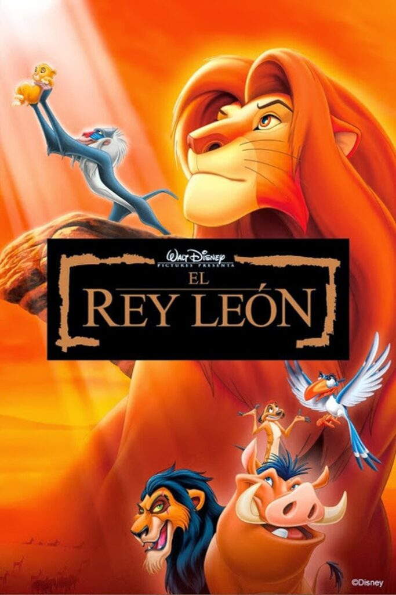

Es la trigésima segunda película en el canon de Walt Disney Animation y se realizó en un período conocido como el Renacimiento de Disney. La película se realizó bajo la dirección de Rob Minkoff y Roger Allers, el productor Don Hahn, los guiones de Irene Mecchi, Jonathan Roberts y Linda Woolverton, y con Hans Zimmer, Elton John y Tim Rice como encargados de la banda sonora.
Además, cuenta con un amplio reparto coral en el que participaron Matthew Broderick, Jeremy Irons, James Earl Jones, Jonathan Taylor Thomas, Moira Kelly, Nathan Lane y Rowan Atkinson.
Trama
El argumento de El rey león se desarrolla en África y tiene inspiraciones en las historias bíblicas de José y Moisés, y en la obra Hamlet de William Shakespeare. Cuenta la historia de Simba, un joven león que tras la muerte de su padre, rey de Pride Lands, es exiliado de su hogar por su tío, que usurpa el trono. Con ayuda de sus amigos y las enseñanzas de su padre, Simba es alentado tiempo después a regresar y reclamar su lugar en el reino.
El desarrollo del filme comenzó en 1988, en una reunión entre Jeffrey Katzenberg, Roy E. Disney y Peter Schneider, mientras promocionaban Oliver y su pandilla en Europa. Thomas Disch escribió un tratamiento y Woolverton avanzó los primeros guiones cuando George Scribner fue asignado director, al que se unió Allers posteriormente. La producción empezó en 1991 al mismo tiempo que Pocahontas, que es la que tenía a los mejores animadores de Disney. Más tarde, parte del personal viajó a Kenia a visitar el parque nacional de Hell's Gate con tal de investigar animales y la ubicación en la que se basaría la película. Scribner abandonó la producción tiempo después debido a diferencias creativas, por lo que fue reemplazado por Minkoff. Cuando Hahn se unió al proyecto, se mostró insatisfecho con el guion, por lo que la historia se volvió a escribir rápidamente. Unos veinte minutos en secuencias de animación se elaboraron en Disney-MGM Studios, ubicados en el estado estadounidense de Florida, a la que se añadió la animación por computadora, recurso utilizado varias veces en el filme.
La cinta fue lanzada el 15 de junio de 1994. Obtuvo reacción positiva por parte de la crítica, que la elogió sobre todo por su música, argumento y animación. Tras un relanzamiento en versión 3D en 2011, la recaudación ascendió hasta unos 968 millones USD desde su estreno original hasta ese mismo año, además de ser la cinta cuyos dibujos están hechos a mano y en 2D con más recaudación, y se encuentra entre las películas que más ingresos ha generado tanto en Estados Unidos como en otros países. El rey león ganó dos premios Óscar gracias a su banda sonora y el Globo de Oro en la categoría de mejor película comedia o musical, entre otros. De esta película derivaron varios trabajos como la adaptación al teatro, las películas The Lion King II: Simba's Pride (1998) y El rey león 3: Hakuna Matata (2004), así como las series Timón y Pumba y The Lion Guard.

Premios y reconocimientos
El rey león recibió cuatro nominaciones a los Globos de Oro y a los Óscar. De los primeros, sería vencedor en las categorías de mejor película comedia o musical, mejor banda sonora y mejor canción original —por «Can you feel the love tonight?»—. La canción de «Circle of Life» también fue nominada. En los Óscar, fue el ganador en la temática de mejor banda sonora y mejor canción original —con la misma que en el Globo de Oro—. Las canciones «Circle of Life» y «Hakuna Matata» también fueron nominadas. «Can you feel the love tonight?» también ganó un Grammy a la mejor interpretación vocal pop masculina. La película también conquistó los premios Annie en las categorías de mejor película animada, mejor actuación vocal —para Jeremy Irons— y mejor historia en un filme animado.
Premios Óscar
El Premio de la Academia de Artes y Ciencias Cinematográficas (en inglés: Academy Awards), conocido popularmente como Premio Óscar, es una distinción anual concedida por la Academia de Artes y Ciencias Cinematográficas (en inglés: Academy of Motion Picture Arts and Sciences; acrónimo: AMPAS) en reconocimiento a la excelencia y activismo social de los profesionales de la industria cinematográfica que incluye actores, directores y escritores, ampliamente considerada el máximo honor en el cine. El Óscar es conocido oficialmente como el «Premio de la Academia al Mérito» y se trata del principal de los nueve que otorga la organización